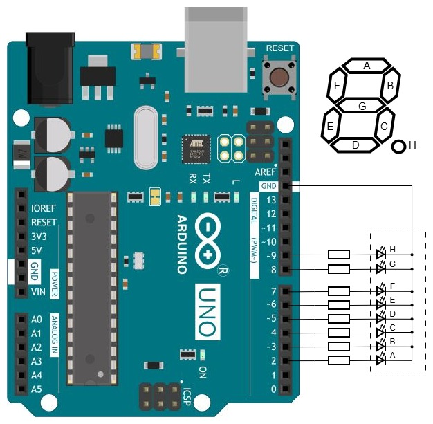

Задача — реализовать два режима отображения принятых из терминала данных на подключённом к Arduino UNO семисегментном индикаторе с общим катодом. В первом режиме передаётся и отображается цифра 0-9, во втором в виде строки нулей и единиц передаётся схема отображения произвольного знака (комбинация сегментов). Переключение режимов и передачу данных выполнять в строках вида параметр=значение.
Концептуальное отличие от проекта Зажигаем цифры только в способе ввода данных. В программе сделан интерпретатор упрощённой командной строки: с клавиатуры компьютера вводятся команды вида параметр=значение. Воспринимаются только два параметра, m и v. Параметр m может принимать только значения 0 и 1, он определяет режим интерпретации значения, переданного для параметра v. Значение параметра v определяет, что будет отображаться на индикаторе.
Команда m не оказывает никакого визуального действия, лишь меняет режим. Если передать команду m=0, то включится режим отображения с декодированием, в котором в команде v=значение в качестве значения воспринимаются только цифры 0-9, они же отображаются на индикаторе. После передачи команды m=1 включится режим отображения без декодирования — в нём программа воспринимает строки вида v=двоичное число с числом разрядов до 8, например, v=111. Переданное двоичное число определяет отображаемую комбинацию сегментов: младший разряд соответствует сегменту A индикатора, соседний слева разряд сегменту B, а старший разряд восьмиразрядного числа — сегменту H (десятичной точке). Таким образом, команда v=111 в режиме без декодирования зажжёт сегменты A, B, C (отобразится цифра 7), команда v=10000111 покажет цифру 7 с точкой, а v=11111111 зажжёт все сегменты. Погасить индикатор можно командой v=0.
В программе реализованы разбор командной строки и преобразование строки единиц и нулей в байт (схему отображения произвольного знака). По умолчанию включён режим отображения с декодированием, так что сразу можно ввести команду v=0 и увидеть нуль на индикаторе. После смены режима командой m=1 можно вводить комбинации сегментов, выраженные двоичным числом.

Текст программы содержится в файле Ind_y_Ardu.ino, который можно получить с Github по ссылке.
Как вариант, можно получить с Github весь репозиторий цикла "Ардуино и индикаторы" и выполнить команду
git restore -s 7seg02 -- Ind_y_Ardu.ino
Файл Ind_y_Ardu.ino в рабочей области будет перезаписан требуемой версией.